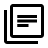

Accueil
Recherche
Thématiques de Recherche
Plateformes technologiques
Membres
Projets
Publications
Partenaires
Infos et Contacts
Contactez-nous
Plan d'accès
Offres d'emploi
Projets en cours
CASTEL : accompagnement dans la transformation digitale
Description
Contrat industriel en partenariat avec l’entreprise Castel29. L’objectif de ce travail est d’accompagner l’entreprise dans sa transformation digitale. Le but est de numériser l’environnement de l’entreprise pour améliorer la sécurité de ses employés mais aussi de numériser la chaîne de fabrication. Actuellement, nous travaillons avec l’entreprise sur les possibilités de mise en place de solutions de maintenance prédictive.
Mot-clés
Usine du futur, IoT, Capteurs, Déploiement
Partenaires
Castel29
Rôle de l'équipe projet
Montage, coordination, dimensionnement, réalisation.
VISEMAR : amélioration des performances des drones autonomes sous-marins par vision
Description
Dans le cadre du programme régional Systèmes Autonomes en Milieu Maritime (SAMM), nous collaborons avec Thales comme partenaire industriel et le Lab-STICC via le projet intitulé : « Système de VISion Embarqué pour l’amélioration de l’autonomie des drones sous-MARins » (VISEMAR). Le projet VISEMAR s’intéresse à l’amélioration des performancesde fonctionnement des drones autonomes sous-marins et donc leur autonomie en embarquant un système de vision doté de fonctions d’apprentissage, d’analyse de scène, de prise de décision et de communications
Mot-clés
Réseaux de neurones, Intelligence embarquée, FPGA, Sous-marin
Partenaires
Région Bretagne, Thales, Lab-STICC
Rôle de l'équipe projet
Montage, coordination, dimensionnement, réalisation.
SEAS : Système d'Étude Autonome et de Surveillance de la faune patrimoniale en milieu protégé
Description
Conception et développement d’un système d’étude de traitement des phoques dans l’île de Morgol
Mot-clés
Deep Learning, Traitement devidéos
Partenaires
AFB, Océanopolis
Rôle de l'équipe projet
dimensionnement, réalisation
Projets achevés
HPeC : architectures électroniques reconfigurables dynamiquement (2019)
Description
projet ANR porté par Jean-Philippe Diguet du Lab-STICC. L’objectif du projet est de démontrer l’apport des architectures électroniques reconfigurables dynamiquement dans le contexte des drones aériens. Un des lots du projet concerne l’implantation sur FPGA de solution de détection, d’apprentissage et de suivi d’objet en temps-réel.
Mot-clés
FPGA
Partenaires
Lab-STICC, Inria, GIPSA-Lab, INPIXAL, Institut Pascal
Rôle de l'équipe projet
Conseil